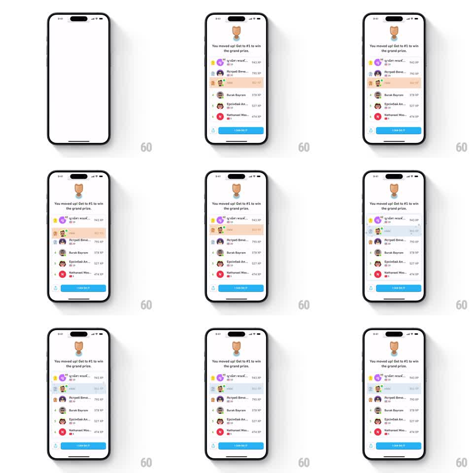

Media
Frame-by-frame

Rebuild this animation 1:1: Duolingo's leaderboard jump - on the white league screen, the user's highlighted row leaps from third to second place in one springy arc, the displaced row slides down, confetti bursts, and both rows settle into their new ranks under the "You moved up!" header.

Rebuild this animation 1:1: Duolingo's leaderboard jump - on the white league screen, the user's highlighted row leaps from third to second place in one springy arc, the displaced row slides down, confetti bursts, and both rows settle into their new ranks under the "You moved up!" header. ## Integration Integration: stack-agnostic spec - springs given as stiffness/damping, timed motions as duration + curve; map every value to your framework and animation library of choice. ## Scene White league screen. Top: bronze league trophy, headline "You moved up! Get to #1 to win the grand prize." A ranked list of 6 rows (rank numeral, circular avatar, username, XP right-aligned); the user's row carries a peach/orange highlight. Bottom: share icon and blue "I CAN DO IT!" button. ## Motion spec Pattern: single-jump list reorder with spring settle and confetti. - The list fades in with the user at rank 3 (250ms). - The jump: the user's row lifts (scale 1.0 -> 1.05, shadow deepens) and arcs up over the rank-2 row in one motion (450ms, spring ~280/20, overshoot ~10pt above the target slot before settling). - The displaced rank-2 row slides down one slot in the same window (350ms, ease-in-out). - Rank numerals on both rows crossfade to the new values (150ms) at the midpoint. - On landing: a confetti burst of ~16 pieces sprays from the user's row (up and outward, gravity, 700ms life, staggered 30ms). - The user row settles with a soft bounce (scale 1.05 -> 0.98 -> 1.0, 250ms). ## Calibration - One jump only - this reads as a leap, not the step-by-step climb of the multi-hop variant. - The row must visibly pass OVER the other row (z-order lift), not slide through it. ## Reduced motion Rows crossfade into the new order over 250ms; no arc, no confetti. ## Don't miss - The highlight travels with the user row through the entire jump. - Header, trophy, and CTA never move.